Базовые предметы¶
Все предметы, которые могут иметь свойства: оружие, броня, щиты, тринкеты и полезные предметы. Характеристики — из самой Valheim; защита, теги и уровень предмета — то, как предмет видит мод. Списки идут по ходу прохождения: по биому материалов предмета.
Оружие¶
| Тип оружия | Предметы |
|---|---|
| Топоры | 23 |
| Бомбы | 18 |
| Луки | 12 |
| Дубины | 20 |
| Арбалеты | 8 |
| Кастеты | 6 |
| Ножи | 12 |
| Кирки | 5 |
| Древковое оружие | 8 |
| Скипетры | 1 |
| Копья | 14 |
| Посохи | 26 |
| Мечи | 28 |
Оружие без типа (инструменты и рунные зубила):
Оружие (7)¶
| Название | Характеристики | Где создаётся | Уровень предмета | |
|---|---|---|---|---|
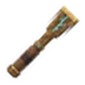 |
Бронзовая рунная стамеска | Колющий 25, Кирка 25 | Кузница | Черный лес |
| Железная рунная стамеска | Колющий 33, Кирка 33 | Кузница | Болото | |
| Коса | Кузница | Гора | ||
| Рунная стамеска из чёрного металла | Колющий 49, Кирка 49 | Кузница | Равнины | |
| Крюк-кошка | Колющий 10 | Черная кузница | Туманные земли | |
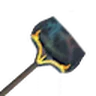 |
Лопата для снега | Черная кузница | Пепельные земли | |
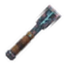 |
Флеймметальная рунная стамеска | Колющий 60, Кирка 150 | Кузница | Пепельные земли |
Броня¶
Нагрудник (42)¶
| Название | Характеристики | Где создаётся | Уровень предмета | |
|---|---|---|---|---|
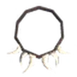 |
Медвежьи узоры | Броня 7, Уклонение 9.45 | Верстак | Черный лес |
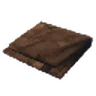 |
Холщовая туника | Броня 1, Уклонение 1.35 | Верстак | Луга |
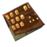 |
Бронзовая кираса | Броня 8 | Кузница | Черный лес |
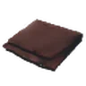 |
Кожаная туника | Броня 2, Уклонение 2.7 | Верстак | Луга |
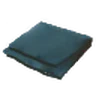 |
Туника из кожи тролля | Броня 6, Уклонение 8.1 | Верстак | Черный лес |
| Корневой нагрудник | Броня 8, Уклонение 5.4 | Верстак | Болото | |
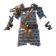 |
Чешуйчатый железный доспех | Броня 14 | Кузница | Болото |
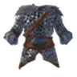 |
Волчий нагрудник | Броня 20 | Кузница | Гора |
| Облачение Фенриса | Броня 10, Уклонение 13.5 | Верстак | Гора | |
| Гнилокостная нагрудная клетка | Броня 18, Уклонение 24.3 | Кузница | Равнины | |
| Куртка из меха быкоящера | Броня 16, Уклонение 21.6 | Верстак | Равнины | |
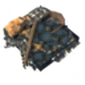 |
Обитая кираса | Броня 26 | Кузница | Равнины |
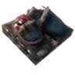 |
Панцирный нагрудник | Броня 32 | Черная кузница | Туманные земли |
| Сшитое из эйтра одеяние | Броня 16, Рунный щит 4.8 | Стол гальдров | Туманные земли | |
| Кираса Аска | Броня 28, Уклонение 37.8 | Черная кузница | Пепельные земли | |
| Огнеметаллическая кираса | Броня 38 | Черная кузница | Пепельные земли | |
| Одежды Эмблы | Броня 19, Рунный щит 5.7 | Стол гальдров | Пепельные земли | |
| Нагрудник авангарда | Броня 34, Уклонение 45.9 | Черная кузница | Дальний север | |
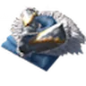 |
Нагрудник защитника | Броня 44, Уклонение 59.4 | Черная кузница | Дальний север |
| Одеяние призывателя | Броня 22, Рунный щит 6.6 | Стол гальдров | Дальний север | |
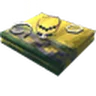 |
Желтая туника в бусинах | Броня 1, Уклонение 1.35 | — | — |
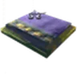 |
Желтая туника с капюшоном | Броня 1, Уклонение 1.35 | — | — |
| Желтое платье в бусинах | Броня 1, Уклонение 1.35 | — | — | |
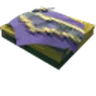 |
Желтое платье с шалью | Броня 1, Уклонение 1.35 | — | — |
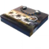 |
Коричневое платье в бусинах | Броня 1, Уклонение 1.35 | — | — |
| Коричневое платье с шалью | Броня 1, Уклонение 1.35 | — | — | |
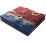 |
Красная туника в бусинах | Броня 1, Уклонение 1.35 | — | — |
| Красная туника с капюшоном | Броня 1, Уклонение 1.35 | — | — | |
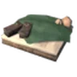 |
Одежда урожая | Броня 1, Уклонение 1.35 | — | — |
| Простая желтая туника | Броня 1, Уклонение 1.35 | — | — | |
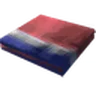 |
Простая красная туника | Броня 1, Уклонение 1.35 | — | — |
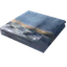 |
Простая синяя туника | Броня 1, Уклонение 1.35 | — | — |
| Простая туника | Броня 1, Уклонение 1.35 | — | — | |
| Простое желтое платье | Броня 1, Уклонение 1.35 | — | — | |
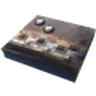 |
Простое коричневое платье | Броня 1, Уклонение 1.35 | — | — |
| Простое платье | Броня 1, Уклонение 1.35 | — | — | |
| Простое синее платье | Броня 1, Уклонение 1.35 | — | — | |
| Синее платье в бусинах | Броня 1, Уклонение 1.35 | — | — | |
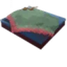 |
Синее платье с шалью | Броня 1, Уклонение 1.35 | — | — |
| Синяя туника в бусинах | Броня 1, Уклонение 1.35 | — | — | |
| Синяя туника с капюшоном | Броня 1, Уклонение 1.35 | — | — | |
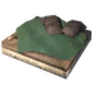 |
Туника урожая | Броня 1, Уклонение 1.35 | — | — |
Плащ (11)¶
| Название | Характеристики | Где создаётся | Уровень предмета | |
|---|---|---|---|---|
| Плащ Одина | Броня 1 | Верстак | Черный лес | |
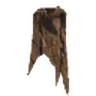 |
Плащ из шкуры оленя | Броня 1 | Верстак | Черный лес |
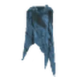 |
Плащ из шкуры тролля | Броня 1 | Верстак | Черный лес |
| Плащ из шкуры волка | Броня 1 | Верстак | Гора | |
| Льняной плащ | Броня 1 | Верстак | Равнины | |
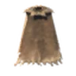 |
Плащ из шкуры быкоящера | Броня 1 | Верстак | Равнины |
| Накидка из перьев | Броня 1 | Стол гальдров | Туманные земли | |
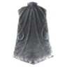 |
Пепельный плащ | Броня 12 | Черная кузница | Пепельные земли |
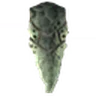 |
Плащ из шкуры пеплозавра | Броня 1 | Стол гальдров | Пепельные земли |
| Плащ из шкуры лося | Броня 12 | Черная кузница | Дальний север | |
| Плащ призывателя | Броня 12, Рунный щит 3.6 | Стол гальдров | Дальний север |
Поножи (20)¶
| Название | Характеристики | Где создаётся | Уровень предмета | |
|---|---|---|---|---|
| Медвежья повязка | Броня 7, Уклонение 9.45 | Верстак | Черный лес | |
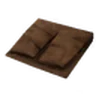 |
Холщовые штаны | Броня 1, Уклонение 1.35 | Верстак | Луга |
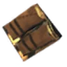 |
Бронзовые наголенники | Броня 8 | Кузница | Черный лес |
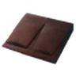 |
Кожаные штаны | Броня 2, Уклонение 2.7 | Верстак | Луга |
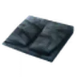 |
Штаны из кожи тролля | Броня 6, Уклонение 8.1 | Верстак | Черный лес |
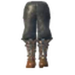 |
Железные наголенники | Броня 14 | Кузница | Болото |
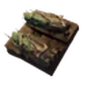 |
Корневые поножи | Броня 8, Уклонение 5.4 | Верстак | Болото |
| Волчья защита для ног | Броня 20 | Кузница | Гора | |
| Поножи Фенриса | Броня 10, Уклонение 13.5 | Верстак | Гора | |
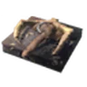 |
Гнилокостный набедренник | Броня 18, Уклонение 24.3 | Кузница | Равнины |
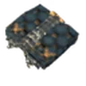 |
Обитые наголенники | Броня 26 | Кузница | Равнины |
| Штаны из меха быкоящера | Броня 16, Уклонение 21.6 | Верстак | Равнины | |
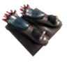 |
Панцирные поножи | Броня 32 | Черная кузница | Туманные земли |
| Сшитые из эйтра штаны | Броня 16, Рунный щит 4.8 | Стол гальдров | Туманные земли | |
| Огнеметаллические поножи | Броня 38 | Черная кузница | Пепельные земли | |
| Штаны Аска | Броня 28, Уклонение 37.8 | Черная кузница | Пепельные земли | |
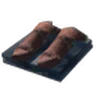 |
Штаны Эмблы | Броня 19, Рунный щит 5.7 | Стол гальдров | Пепельные земли |
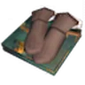 |
Штаны авангарда | Броня 34, Уклонение 45.9 | Черная кузница | Дальний север |
| Штаны защитника | Броня 44, Уклонение 59.4 | Черная кузница | Дальний север | |
| Штаны призывателя | Броня 22, Рунный щит 6.6 | Стол гальдров | Дальний север |
Шлем (40)¶
| Название | Характеристики | Где создаётся | Уровень предмета | |
|---|---|---|---|---|
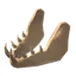 |
Гнилокостная маска | Дробящий 10, Броня 12 | Кузница | Равнины |
| Медвежий головной убор | Дробящий 10, Броня 7 | Верстак | Туманные земли | |
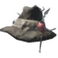 |
Рыбацкая шляпа | Дробящий 10, Броня 8 | Верстак | Черный лес |
| Шлем Одина | Дробящий 10, Броня 1 | Верстак | Черный лес | |
| Бронзовый шлем | Дробящий 10, Броня 8 | Кузница | Черный лес | |
| Кожаный шлем | Дробящий 10, Броня 2, Уклонение 2.7 | Верстак | Луга | |
| Праздничная шапка | Броня 1 | Верстак | Черный лес | |
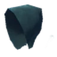 |
Шлем из кожи тролля | Дробящий 10, Броня 6, Уклонение 8.1 | Верстак | Черный лес |
| Железный шлем | Дробящий 10, Броня 14 | Кузница | Болото | |
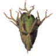 |
Корневая маска | Броня 8, Уклонение 5.4 | Верстак | Болото |
| Драконий шлем | Дробящий 10, Броня 20 | Кузница | Гора | |
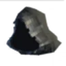 |
Капюшон Фенриса | Броня 10, Уклонение 13.5 | Верстак | Гора |
| Капюшон из меха быкоящера | Дробящий 10, Броня 16 | Верстак | Равнины | |
| Обитый шлем | Дробящий 10, Броня 26 | Кузница | Равнины | |
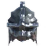 |
Панцирный шлем | Дробящий 10, Броня 32 | Черная кузница | Туманные земли |
| Сшитый из эйтра капюшон | Дробящий 10, Броня 16, Рунный щит 4.8 | Стол гальдров | Туманные земли | |
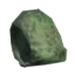 |
Капюшон Аска | Дробящий 10, Броня 28 | Черная кузница | Пепельные земли |
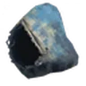 |
Капюшон Эмблы | Дробящий 10, Броня 19, Рунный щит 5.7 | Стол гальдров | Пепельные земли |
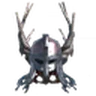 |
Огнеметаллический шлем | Броня 38 | Черная кузница | Пепельные земли |
| Головной убор призывателя | Дробящий 10, Броня 22, Рунный щит 6.6 | Стол гальдров | Дальний север | |
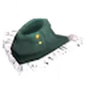 |
Капюшон авангарда | Дробящий 10, Броня 34 | Черная кузница | Дальний север |
| Корона Вальхейма | Дробящий 10, Броня 50 | Черная кузница | Дальний север | |
| Шлем защитника | Дробящий 10, Броня 44 | Черная кузница | Дальний север | |
| Ведьмовская шляпа | Броня 1 | — | — | |
| Венец Двергов | Дробящий 10, Броня 2 | — | — | |
| Желтый платок | Броня 1 | — | — | |
| Зеленый скрученный платок | Броня 1 | — | — | |
| Коричневая меховая шапка | Броня 1 | — | — | |
| Корона из корней | Броня 1 | — | — | |
| Корона летнего солнцестояния | Дробящий 10, Броня 1 | — | — | |
| Красный скрученный платок | Броня 1 | — | — | |
| Повязка на голову | Дробящий 10, Броня 1 | — | — | |
| Праздничный колпак | Дробящий 10, Броня 1 | — | — | |
| Причудливая зеленая шапка | Броня 1 | — | — | |
| Причудливая оранжевая шапка | Броня 1 | — | — | |
| Простая красная шапка | Броня 1 | — | — | |
| Простая фиолетовая шапка | Броня 1 | — | — | |
| Серая меховая шапка | Броня 1 | — | — | |
| Синий платок | Броня 1 | — | — | |
| Соломенная шляпа | Броня 1 | — | — |
Щиты¶
Баклер (4)¶
| Название | Характеристики | Где создаётся | Уровень предмета | |
|---|---|---|---|---|
| Бронзовый баклер | Броня 100, Сила блокирования 16 | Кузница | Черный лес | |
| Железный баклер | Броня 150, Сила блокирования 28 | Кузница | Болото | |
| Панцирный баклер | Дробящий 10, Броня 200, Сила блокирования 78 | Черная кузница | Туманные земли | |
| Нордский баклер | Броня 150, Сила блокирования 88 | Черная кузница | Дальний север |
Башенный щит (8)¶
| Название | Характеристики | Где создаётся | Уровень предмета | |
|---|---|---|---|---|
| Деревянный башенный щит | Броня 100, Сила блокирования 10 | Верстак | Луга | |
| Костяной башенный щит | Броня 100, Сила блокирования 32 | Верстак | Черный лес | |
| Железный башенный щит | Броня 100, Сила блокирования 52 | Кузница | Болото | |
| Щит из змеиной чешуи | Дробящий 10, Броня 300, Сила блокирования 60 | Кузница | Гора | |
| Башенный щит из черного металла | Броня 200, Сила блокирования 104 | Кузница | Равнины | |
| Башенный щит из огнеметалла | Броня 200, Сила блокирования 140 | Черная кузница | Пепельные земли | |
| Нордский большой щит | Броня 200, Сила блокирования 158 | Черная кузница | Дальний север | |
| Железный щит | Броня 100, Сила блокирования 35 | — | — |
Круглый щит (9)¶
| Название | Характеристики | Где создаётся | Уровень предмета | |
|---|---|---|---|---|
| Деревянный щит | Броня 100, Сила блокирования 6 | Верстак | Луга | |
| Щит из корней | Броня 100, Сила блокирования 48 | Верстак | Болото | |
| Укрепленный щит | Дробящий 10, Броня 200, Сила блокирования 42 | Кузница | Болото | |
| Серебряный щит | Дробящий 10, Броня 200, Сила блокирования 60 | Кузница | Гора | |
| Щит из черного металла | Дробящий 10, Броня 200, Сила блокирования 78 | Кузница | Равнины | |
| Панцирный щит | Дробящий 10, Броня 200, Сила блокирования 96 | Черная кузница | Туманные земли | |
| Щит из огнеметалла | Дробящий 10, Броня 200, Сила блокирования 114 | Черная кузница | Пепельные земли | |
| Нордский щит | Дробящий 10, Броня 200, Сила блокирования 132 | Черная кузница | Дальний север | |
| Рыцарский щит НОВЫЙ | Сила блокирования 120 | — | — |
Украшения¶
Кольцо (7)¶
| Название | Характеристики | Где создаётся | Уровень предмета | |
|---|---|---|---|---|
| Ring of the Silent Storm | +(10-15)% lightning resistance | Стол рунограна | Черный лес | |
| Кольцо могильного зова | (10-15)% увеличение урона приспешников | Стол рунограна | Черный лес | |
| Ring of the Bog Ward | +(10-15)% poison resistance | Стол рунограна | Болото | |
| Ring of the Stone Grip | +(1-5) damage with attacks | Стол рунограна | Болото | |
| Ring of the Winter Pass | +(10-15)% frost resistance | Стол рунограна | Гора | |
| Ring of the Smouldering Coal | +(10-15)% fire resistance | Стол рунограна | Равнины | |
| Ring of the Silent Ancestors | +(10-15)% spirit resistance | — | — |
Пояс (12)¶
| Название | Характеристики | Где создаётся | Уровень предмета | |
|---|---|---|---|---|
| Пояс первой тропы | +(1-3) к ячейкам еды | Стол рунограна | Луга | |
| Пояс лесного дозора | +(1-3) к ячейкам еды | Стол рунограна | Черный лес | |
| Пояс солёного ветра | +(1-3) к ячейкам еды | Стол рунограна | Болото | |
| Пояс топкого брода | +(1-3) к ячейкам еды | Стол рунограна | Болото | |
| Пояс волчьего перевала | +(1-3) к ячейкам еды | Стол рунограна | Гора | |
| Пояс солнечной степи | +(1-3) к ячейкам еды, +(1-3) к ячейкам зелий | Стол рунограна | Равнины | |
| Пояс туманного следопыта | +(1-3) к ячейкам еды, +(1-3) к ячейкам зелий | Стол рунограна | Туманные земли | |
| Пояс пепельного похода | +(1-3) к ячейкам еды, +(1-3) к ячейкам зелий | Стол рунограна | Пепельные земли | |
| Пояс безмолвной стужи | +(1-3) к ячейкам еды, +(1-3) к ячейкам зелий | Стол рунограна | Дальний север | |
| Дань Хель | +(1-3) к ячейкам еды | — | — | |
| Кровь Квасира | +(1-3) к ячейкам еды | — | — | |
| Мегингьорд | +(1-3) к ячейкам еды | — | — |
Тринкеты¶
Тринкет (15)¶
| Название | Характеристики | Где создаётся | Уровень предмета | |
|---|---|---|---|---|
| Бронзовый медальон | Кузница | Черный лес | ||
| Сердце леса | Кузница | Черный лес | ||
| Железная брошь | Кузница | Болото | ||
| Ножной браслет | Кузница | Болото | ||
| Плавники судьбы | Кузница | Болото | ||
| Волчье око | Кузница | Гора | ||
| Кристальное сердце | Кузница | Гора | ||
| Браслеты доблести | Кузница | Равнины | ||
| Мантия уклонения | Кузница | Равнины | ||
| Гремящие кандалы | Черная кузница | Туманные земли | ||
| Пульсирующие серьги | Черная кузница | Туманные земли | ||
| Йормундлинг | Черная кузница | Пепельные земли | ||
| Пламенное сердце | Черная кузница | Пепельные земли | ||
| Ведьмин венец | Черная кузница | Дальний север | ||
| Глоткорез | Черная кузница | Дальний север |
Полезные предметы¶
Полезный предмет (3)¶
| Название | Характеристики | Где создаётся | Уровень предмета | |
|---|---|---|---|---|
| Руна Возрождения | Стол рунограна | Луга | ||
| Свет светлячка | Верстак | Туманные земли | ||
| Дужка | — | — |
Данные из Path of Valheiman 5.3.6, извлечены 2026-10-27.